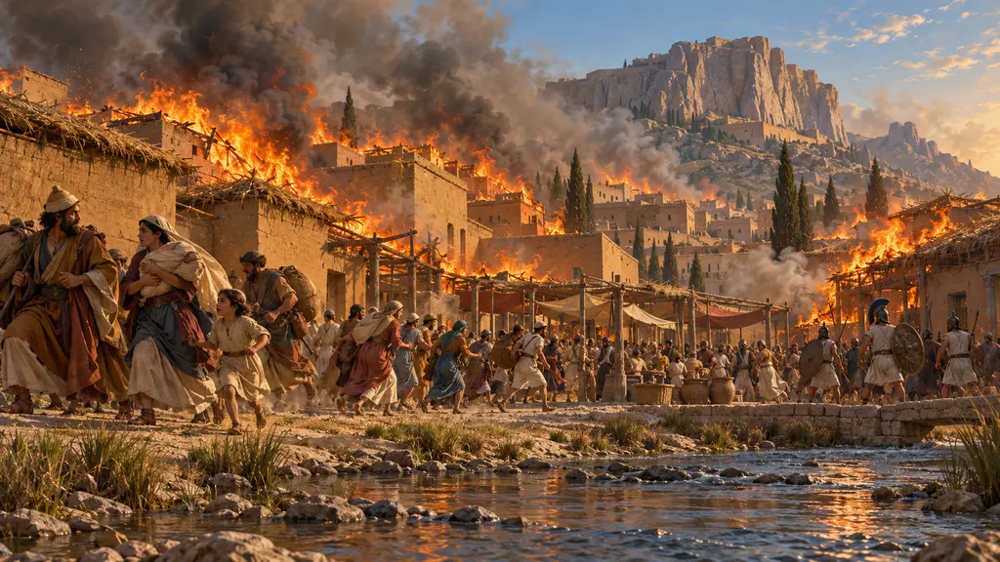
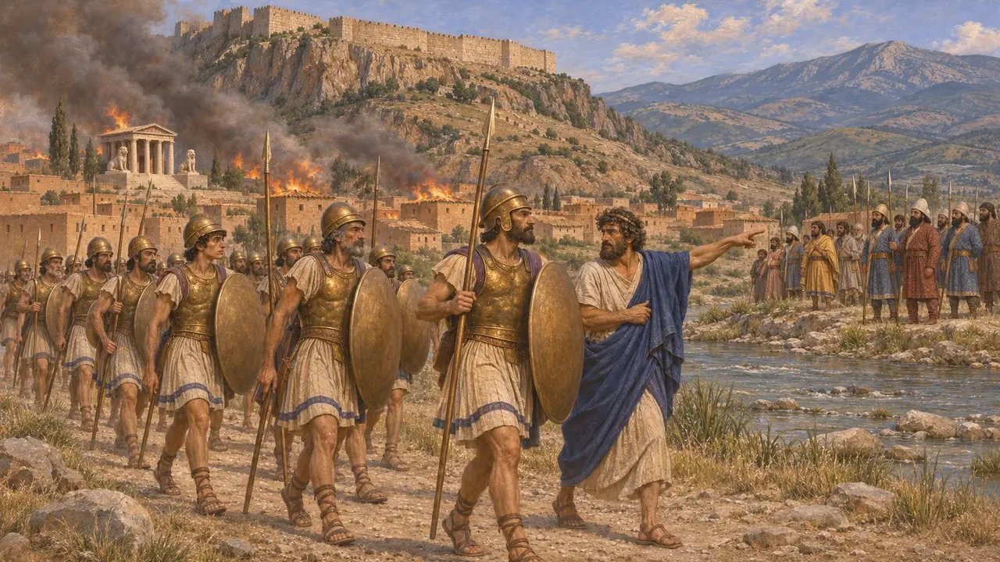
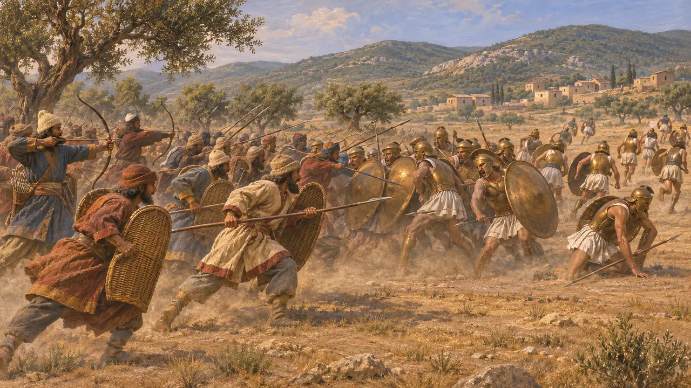
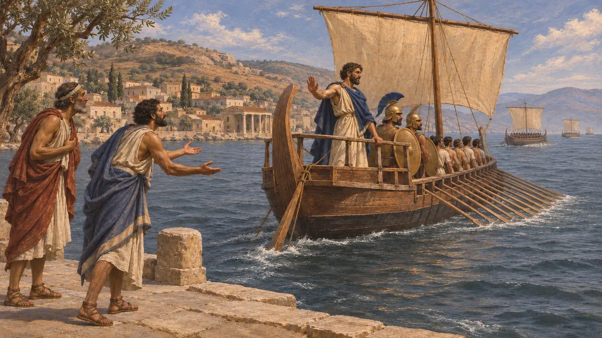
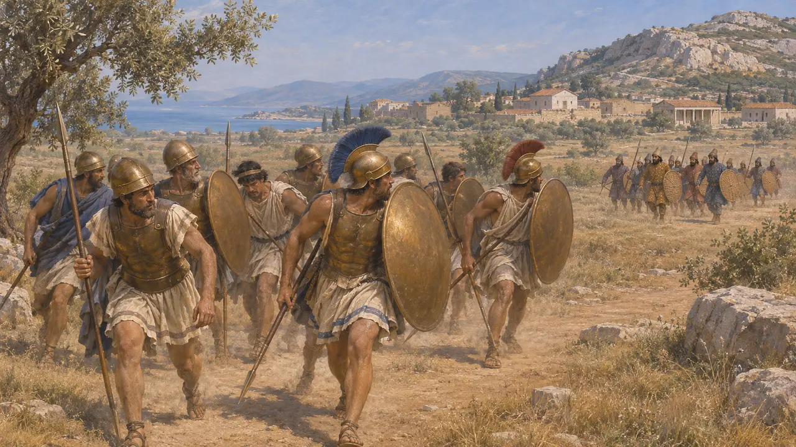
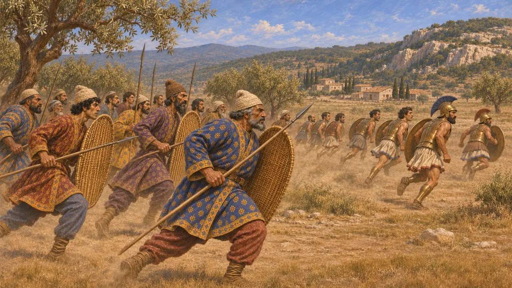

以弗所之战
波斯在爱奥尼亚的以弗所附近击败爱奥尼亚人及其盟友,公元前498年
焚烧萨第斯之后,爱奥尼亚叛军及其雅典和埃雷特里亚盟友退向海岸。希罗多德说,波斯军队在以弗所附近追上他们,并将其打得大败。不久之后,雅典退出了爱奥尼亚起义,叛军失去雅典的援助,继续作战。
游戏中： 游戏将其列为公元前498年的一场战役,撤退的希腊人被击败,雅典人从此撤回本土。这依循希罗多德的说法;游戏没有呈现卡戎的版本,在那个版本中并没有发生败仗。

进军萨第斯
古代记述希罗多德说,爱奥尼亚人航行到以弗所,把船留在科瑞索斯,由以弗所向导带路,沿凯斯特河深入内陆,翻过特莫洛斯山。他们攻占了萨第斯的下城,但阿尔塔弗涅斯守住了卫城。大火在芦苇顶的房屋间蔓延,烧毁了女神库贝贝的神庙。面对聚集在帕克托洛斯河边的吕底亚人和波斯人,希腊人向海岸撤退。
Herodotus 5.100-102

追击与以弗所附近之战
古代记述希罗多德说,占据哈吕斯河以西土地的波斯人前来援救萨第斯,发现希腊人已经离去,便循着他们的踪迹追赶。他们在以弗所追上了希腊人,爱奥尼亚人列阵迎战,却遭到惨败。许多人阵亡,其中有埃雷特里亚人的将军欧阿尔基德斯,他是竞技会的优胜者,诗人西摩尼得斯曾赞颂过他。幸存者四散逃回各自的城邦。
Herodotus 5.102

雅典退出战争
古代记述希罗多德说,雅典人此后彻底抛弃了爱奥尼亚人,拒绝再出手相助,尽管阿里斯塔哥拉斯派使者请他们回来。他早已把那20艘雅典战船称为希腊人与异邦人祸患的开端。希罗多德认为,大流士对雅典的怒火源于萨第斯被焚,而不是那场败仗。
Herodotus 5.97; 5.103; 5.105

究竟有没有过一场失败
争夺中普鲁塔克指责希罗多德捏造或夸大了这场败仗。他引用了兰普萨科斯的卡戎,后者讲到雅典的战船、除王室城墙外萨第斯被攻占,以及撤回米利都,却没有提到以弗所之战。多数现代历史学家仍然承认以弗所附近确有一次实际的挫败,但认为其规模与细节并不确定。
Plutarch, On the Malice of Herodotus

年代与波斯记载的沉默
争夺中对萨第斯的突袭和以弗所附近的战斗通常系于公元前498年，但也有些史家倾向于公元前499年。没有任何波斯铭文或泥板提到这两件事，因此整个故事全靠希腊作家。波斯指挥官如何看待这场行动，以及双方各有多少兵力参战，都不得而知。
O. Murray, 'The Ionian Revolt', Cambridge Ancient History IV, 1988
来源
- Herodotus 5.97-105
- Plutarch, On the Malice of Herodotus
- O. Murray, 'The Ionian Revolt', Cambridge Ancient History IV, 1988
- P. Briant, From Cyrus to Alexander, 2002